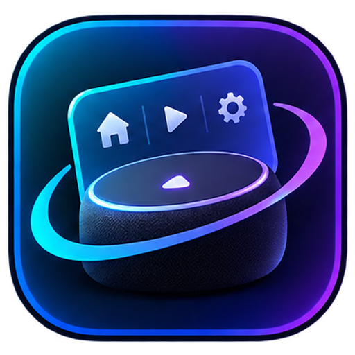

Панель Яндекс Станции Миди
Выберите колонку или найдите её в локальной сети
Нажмите «Найти колонки», если компьютер и Станция Миди в одной сети. Либо добавьте адрес вручную — например, 192.168.1.10:8055.
192.168.1.10:8055
Введите IP-адрес панели. Порт можно не указывать — подставится штатный 8055.
Запись будет удалена из списка. Сама панель на колонке и её настройки останутся на месте.
Тонкая оболочка вокруг веб-панели MidiPult для рутованной Яндекс Станции Миди. Панель работает на самой колонке, приложение находит её в локальной сети и открывает в этом же окне.
Проект не связан с Яндексом. Используйте только на своём устройстве и не публикуйте панель в интернет — она рассчитана на доверенную локальную сеть.
Проверяю обновления…